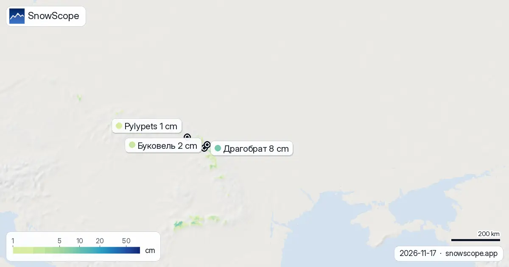

Снігова ситуація в Україні, 17 листопада 2026: курорти, новий сніг і найближчі дні
Вівторок, 17 листопада: сніг вкриває близько 1 080 км² гір в Україні. Це на 570 км² менше, ніж учора.
Дивіться сніговий прогноз для Драгобрат у застосунку SnowScopeВисота снігу, сповіщення та 3D-карта, безкоштовно.
Сніговий покрив сьогодні
Тиждень тому було 5 610 км²: відтоді розтануло 4 530 км². Межа снігу проходить приблизно на 1 400 м.
| Курорт | Висота снігу | Новий сніг, 72 год | Найближчі дні | Вершина |
|---|---|---|---|---|
| Драгобрат | 8 cm | 10 cm | 17 cm | 1 706 m |
| Буковель | 2 cm | 2 cm | 5 cm | 1 370 m |
| Pylypets | 1 cm | 3 cm | 2 cm | 1 165 m |

Де випав новий сніг
Триденні суми нового снігу сягають 6 см. Найбільше: хребет Боржава, Горгани і Чорногора.
Лише за останні 24 години випало до 4 см.
Щонайменше 5 см нового снігу лежить на площі близько 260 км².
Висота снігу за висотою над рівнем моря
Середня висота снігового покриву за висотою: 500–1 000 м: у середньому менше 1 см (1 % під снігом); 1 000–1 500 м: у середньому менше 1 см (16 % під снігом); 1 500–2 000 м: у середньому 4 см (83 % під снігом).
Що це означає для схилів
Тепло з'їдає покрив: зранку твердий сніг, по обіді мокрий.
Найкращі курорти зараз
Лідер — Драгобрат: 8 см у верхній частині трас.
Далі: Буковель (2 см) і Пилипець (1 см).
Буковель: 2 см нового снігу за три дні і ще до 5 см до пʼятниця, 20 листопада.
Найближчі дні
Прогноз нового снігу: до 12 см за три дні та до 21 см за сім днів.
Найсніжніший день: пʼятниця, 20 листопада, до 8 см.
Поради лижникам
- На початку сезону сніг над камінням тонкий: катайтеся підготовленими трасами.
- Вище межі лісу сніг може бути навіяний вітром: обережно на хребтах.
About these numbers
Resort snow depths are the deepest snow on the resort's upper slopes from the SnowScope snow model (about 1 km, run of 17 листопада); they are estimates for an area, not a measurement at one point. Station values are measurements on the date shown. Forecasts can change. Always read the official avalanche bulletin before going off-piste.
Cite this report
For research, teaching or the press: the numbers and charts are free to reuse under CC BY 4.0 with this citation.
SnowScope (2026), Снігова ситуація в Україні, 17 листопада 2026: курорти, новий сніг і найближчі дні, https://snowscope.app/blog/uk/2026/11/ukraine-snow-report-17-november-2026.html, accessed 2026-11-17
SnowScope (Atlas Labs). (2026, November 17). Снігова ситуація в Україні, 17 листопада 2026: курорти, новий сніг і найближчі дні. SnowScope snow reports. https://snowscope.app/blog/uk/2026/11/ukraine-snow-report-17-november-2026.html
BibTeX
@misc{snowscope2026ukrainesnowreport17novem,
author = {{SnowScope (Atlas Labs)}},
title = {Снігова ситуація в Україні, 17 листопада 2026: курорти, новий сніг і найближчі дні},
year = {2026},
month = nov,
howpublished = {\url{https://snowscope.app/blog/uk/2026/11/ukraine-snow-report-17-november-2026.html}},
note = {Published 2026-11-17 12:53 UTC; accessed 2026-11-17}
}· CC BY 4.0 · Methods, data and tools →
Драгобрат: snow and temperature by height, this winter vs last (tools) →
Follow Драгобрат
Безкоштовно: повідомлення, коли йде новий сніг, і прогноз щоранку.